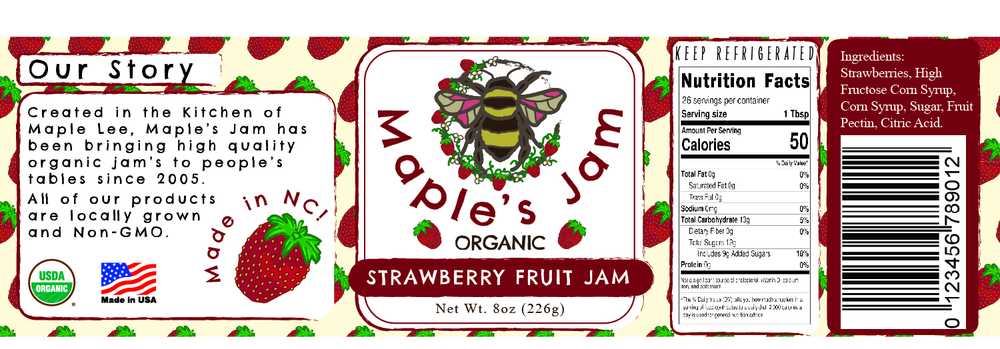
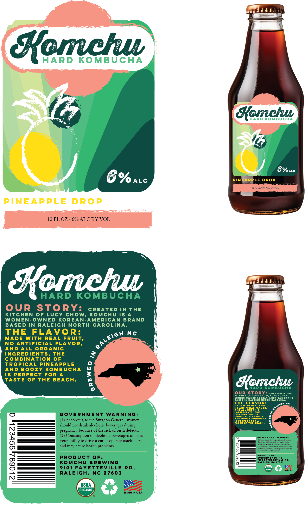

Kendall Krzepek
Cake Decorator
Hello, my name is Kendall Krzepek and I am a student at Wake Technical Community College! With a passion for the arts since childhood, I’ve made it my purpose to add to the world of Graphic Design and Advertising. With 4+ years of experience in the Adobe Creative Suite applications, creating artistic visuals and graphics has become second nature to me. At Wake Technical Community College I am Studying the essential Adobe Creative Suite programs to add to the world of design and advertising. Areas include logo design, website design, website development, illustration, photography, poster design, and label design.
Featured Projects
View selected projects below. More information can be found at https://www.linkedin.com/in/kendall-krzepek/.
Maple's Jam
My role in this project was to create the packaging and product for a hypothetical jar company. I chose a jam jar and made the brand Maple's Jam. They specialize in organic and non-GMO products.
View project / case studyCassette Manhattan

For this project I was instructed to create a T-shirt design for a band that I made up. I created an indie band called Cassette Manhattan and they specialized in Indie Jazz.
View project / case studyKomchu Kombucha
We were instructed to create a drink brand. I created Komchu which is an alcoholic kombucha for those who want a healthy alcoholic beverage.
View project / case studyMushroom Paradise

I created this composition for my Illustration class. It was meant to illustrate a happy place, and I thoroughly find nature to be my happy place, especially in the mountains.
View project / case studyWork Experience
Crew Member
Chipotle
OCT 2020 - NOV 2022
Trained in serving food along with working at a cash register and prepping food/dish cleaning. Specializing in customer service.
Bakery Clerk
Lowes Foods
JAN 2023 - AUGUST 2024
Bakery Clerk at Lowes Foods specializing in setting and preparing baked goods for the morning shift. Individually close and manage the bakery at night. Cake decorating experience.
Cake Decorator
Publix
AUGUST 2024 - PRESENT
Cake Decorator at Publix. Trained in a fast paced environment to fullfill the production logs and custom orders.
Education
Wake Technical Community College - Raleigh
Associate of Applied Science in Graphic Design and Advertising2023-2025
Studying the essential Adobe Creative Suite programs to add to the world of design and advertising. Areas include logo design, website design, website development, illustration, photography, poster design, and label design